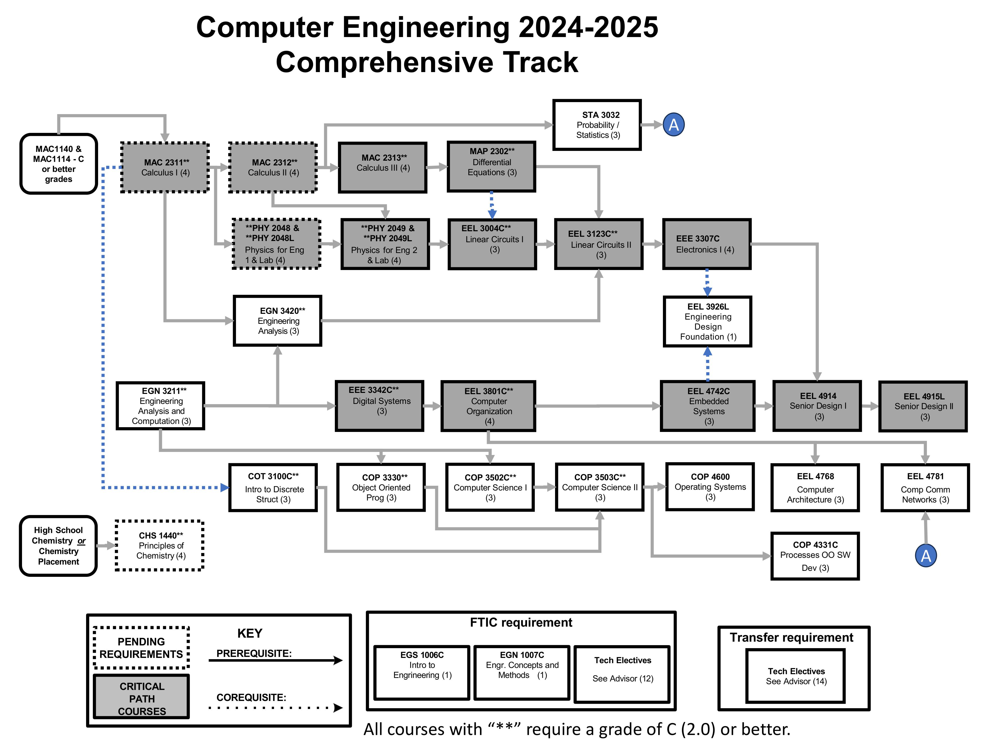

About the Major
The Computer Engineering major at UCF blends electrical engineering principles with computer science to develop hardware and software systems. Students learn about digital systems, embedded systems, computer architecture, and programming.
The program emphasizes problem-solving, design, and innovation, preparing graduates for careers in areas such as robotics, microprocessors, cybersecurity, and system design.
It’s a rigorous major that requires strong analytical skills and a solid foundation in math and science.
Computer Engineering Program Flowchart

Major-Specific Classes
Class 1: EGN 3420 - Engineering Analysis
This course provides a comprehensive introduction to mathematical methods used in engineering, including differential equations, linear algebra, Fourier series, and numerical analysis. Emphasis is placed on applying these techniques to solve real-world engineering problems, particularly those involving systems modeling and analysis.
Class 2: EEE 3342C - Digital Systems
This course covers the principles of digital logic design, including number systems, Boolean algebra, combinational and sequential circuit analysis, and design using logic gates and flip-flops. The laboratory component reinforces theoretical concepts through practical implementation using digital simulation tools and hardware description languages such as VHDL.
Class 3: EEL 4742C - Embedded Systems
This course explores the architecture, programming, and application of embedded microcontroller systems. Topics include hardware-software integration, peripheral interfacing, real-time operating systems, and C programming for embedded environments. The course includes extensive hands-on laboratory work focused on the design, implementation, and testing of embedded systems.
Online Resources |
Campus Resources |